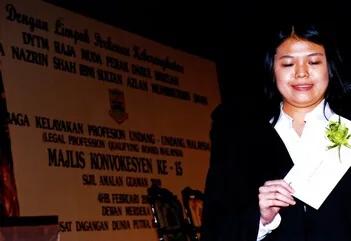
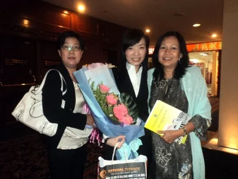
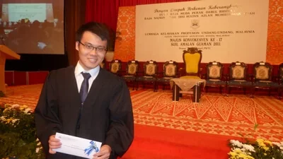
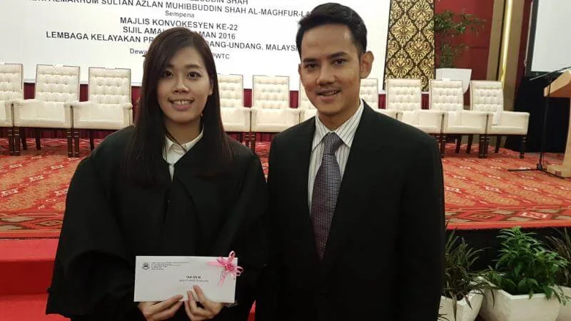
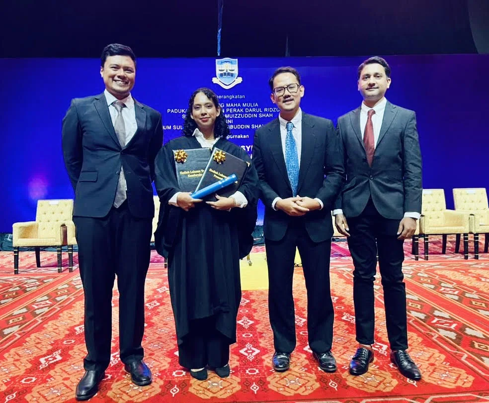
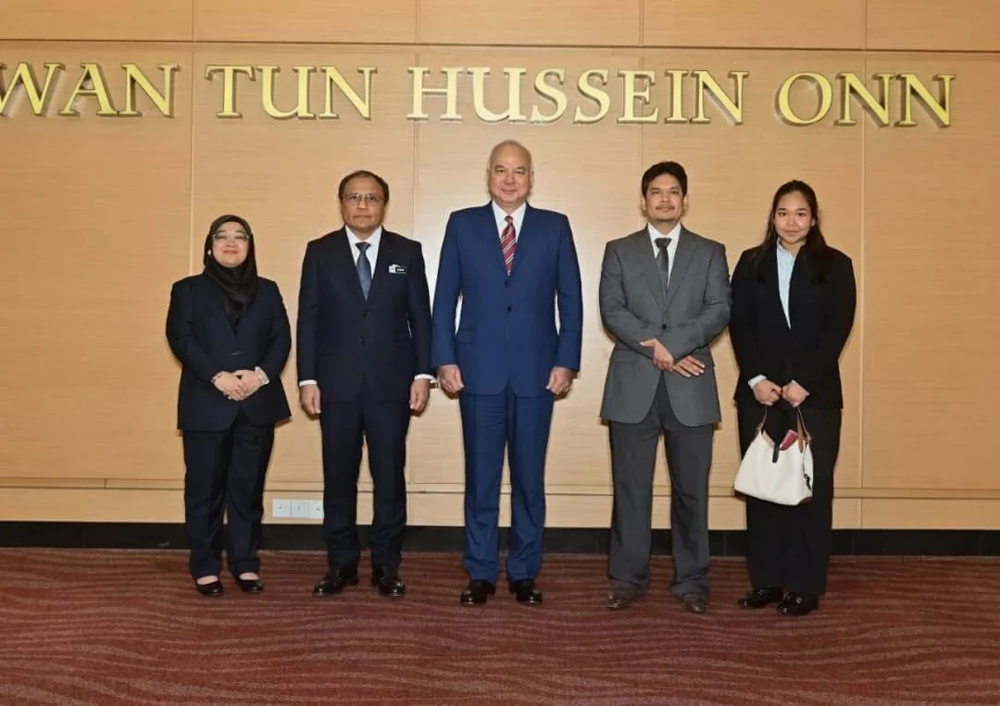

YTAH FLAGSHIP AWARD · SINCE 1997
The CLP
Best Overall Student Prize.
For almost three decades, YTAH has sponsored one of its most coveted recognitions: the annual prize for the Best Overall Student in the Certificate in Legal Practice examinations.
THE AWARD
A continuing commitment to excellence in the legal profession.
The Certificate in Legal Practice is conducted annually by the Legal Profession Qualifying Board, Malaysia. YTAH sponsors the Best Overall Student prize, currently carrying a cash value of RM10,000.
The Foundation’s public record states that potential candidates must achieve an aggregate of at least 300 marks. The sponsorship has continued since 1997.
RECIPIENT RECORD
Best Overall Student recipients preserved in YTAH’s public archive.
The archive currently identifies the recipients below by name. Earlier photographs are retained separately where the accompanying historical record does not reliably identify the recipient.
YTAH is continuing to reconcile the older recipient record from its historical archive. Names are only published here where the source material is sufficiently clear.
PHOTOGRAPHIC ARCHIVE
The award through the years.
Original photographs retained from YTAH’s earlier website and archive.






A CONTINUING TRADITION
Excellence recognised, year after year.
The CLP Prize is treated as a distinct flagship programme within YTAH’s wider work in legal education.
Explore the wider archive →